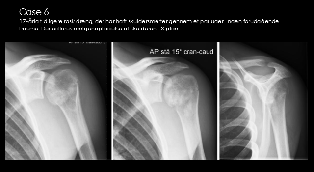

<div style="width: 640px; margin: auto; text-align: center; font-family: arial;">

<h1>Det Radiologiske Case-spil</h1>

<br>

<div style="width: 300px; margin: auto; text-align: left; border: 1px solid #ccc; margin-top: 5px;">
<b>Hvad viser unders&oslash;gelsen?</b><br>
<ul>
<li><a href="02a.html">Patologisk fraktur</a>
<li><a href="02b.html">Akromio-klavikul&aelig;r luksation</a>
<li><a href="02c.html">Bl&oslash;ddelsforkalkninger</a>
<li><a href="02d.html">Skulderluksation</a>
</ul>
</div>

<h2>Aarhus Universitet</h2>

</div>